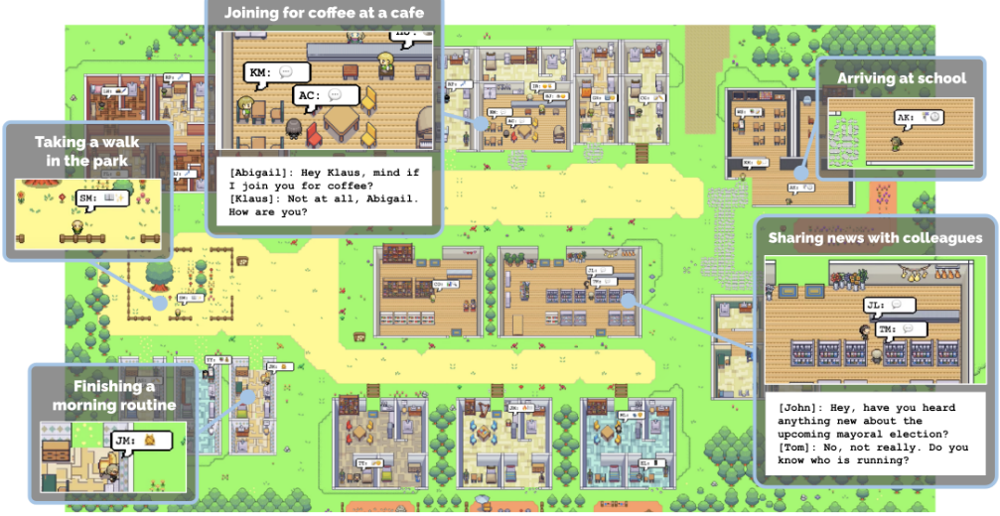
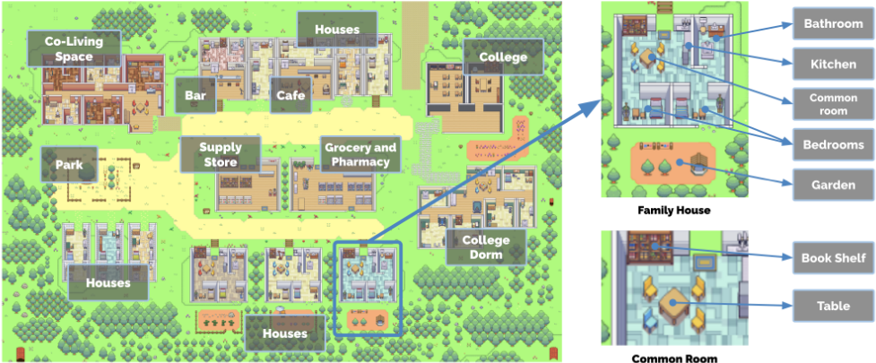
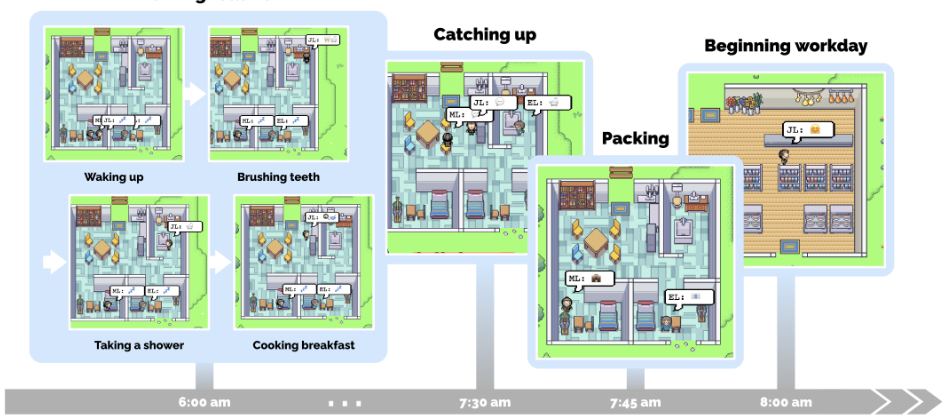
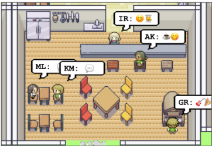
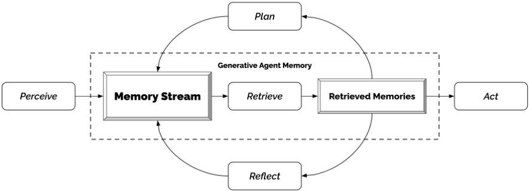
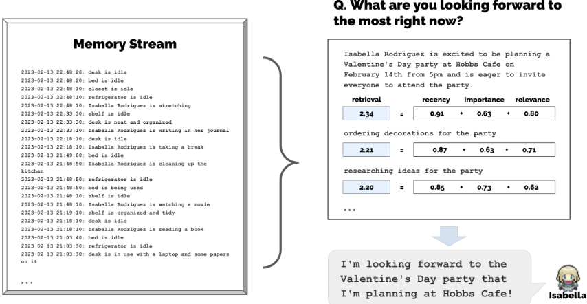
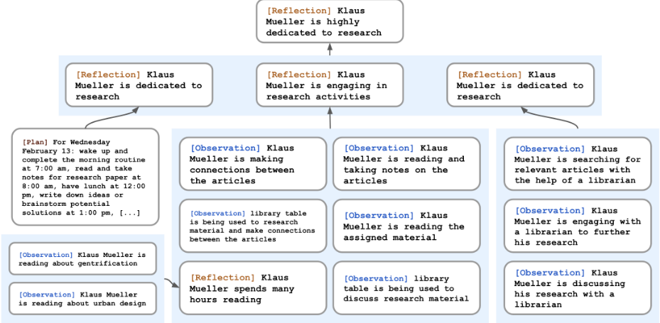
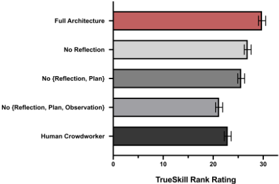
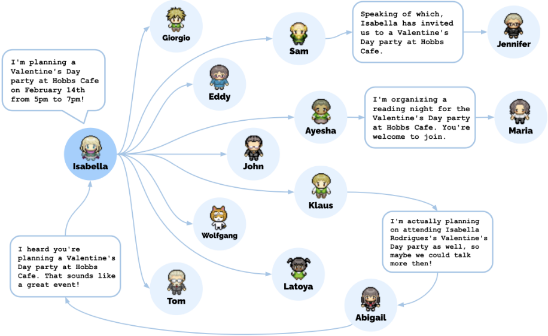

Generative Agent：人类行为的交互式拟像
论文解决的问题是：如何让 LLM 驱动的 Agent 不只在单一时刻表现合理，而是在经验持续增长、社交动态不断展开的情况下保持长期可信与连贯。方法上提出 Generative Agent 架构，包含三个组件：以自然语言完整记录经历的 memory stream，配合 recency、importance、relevance 三因子加权检索函数动态挑选进入 context window 的记忆；reflection 机制在重要性得分累计超过阈值时把记忆递归合成为更高层推断并形成反思树；planning 机制自顶向下把日程逐级分解为 5-15 分钟的动作并支持中途重规划。在 25 个 Agent 的 Smallville 沙箱中，信息扩散、关系形成与情人节派对协调等群体行为从单个种子意图自发涌现；消融实验证明 observation、planning、reflection 各组件缺一不可，完整架构的可信度显著超过各消融版本与人类众包基线。对团队而言，这是记忆管理、Agent 架构与评测方法设计的经典参考。
如何构建能模拟可信人类行为的计算 Agent：不仅要在单一时刻生成合理行为，还要在经历不断增长、事件与冲突随时间起伏、多 Agent 社交动态级联展开的情况下保持长期连贯——即能长期检索相关事件与交互、对记忆进行反思泛化并形成高层推断，再将这些推理转化为当下与长期都合理的计划与反应。
在 LLM（gpt3.5-turbo）之上叠加三组件架构：(1) memory stream：以自然语言记忆对象（描述+创建时间戳+最近访问时间戳）完整记录 Agent 经历，检索函数对 recency（指数衰减，衰减因子 0.995）、importance（让 LLM 按 1-10 打分）、relevance（记忆与查询的 embedding 余弦相似度）三因子做 min-max 归一化后加权求和（α 均为 1），取排名最高且能放入 context window 的记忆进入提示；(2) reflection：当近期事件重要性得分之和超过阈值（150）时触发，先让 LLM 从最近 100 条记录中提出 3 个高层问题，再以问题为查询检索相关记忆（含已有 reflection）并提取带证据引用的洞察，形成层层抽象的反思树；(3) planning：先以角色摘要+前一日摘要生成全天粗粒度计划，再递归分解为小时级与 5-15 分钟级动作；每个时间步根据新观察决定继续执行或反应，并在反应时刻重新生成计划。环境以树结构表示并渲染为自然语言，Agent 维护各自感知到的子图以递归定位行动地点。
受控评测（100 名人评、within-subjects 排名）中完整架构可信度最高（TrueSkill μ=29.89, σ=0.72），依次为无 reflection（μ=26.88）、无 reflection/planning（μ=25.64）、人类众包基线（μ=22.95）、全消融（μ=21.21）；相对代表先前工作的全消融条件效应量 d=8.16；Kruskal-Wallis H(4)=150.29, p<0.001，除两个最差条件外所有两两差异显著（p<0.001）
两天端到端模拟中，知晓 Sam 竞选市长的 Agent 从 1 个（4%）增至 8 个（32%），知晓 Isabella 派对的从 1 个（4%）增至 13 个（52%），且声称知晓者经记忆流核验均无幻觉
Agent 社交网络密度从 0.167 升至 0.74；453 条关于是否认识其他 Agent 的回答中 1.3%（n=6）为幻觉
情人节派对协调：12 个受邀 Agent 中 5 个准时出现在 Hobbs Cafe；未出席的 7 个中 3 个给出日程冲突理由
成本：模拟 25 个 Agent 两天需数千美元 token 费用并耗时数天，架构串行运行
先前基于 LLM 的行为模拟主要依赖 first-order 模板（few-shot 或 CoT 提示），仅以当前环境为条件，无法利用海量过往经验；已有增强方案只采用静态知识库+检索或简单摘要。本文首次将动态增长的 memory stream、三因子检索、递归 reflection 与分层 planning 整合为完整 Agent 架构，使行为同时以当前环境与长期经验为条件，并系统展示了多 Agent 社会中的涌现行为，以及通过组件级消融与人类基线给出的量化证据。
相关度级别：high
命中能力域：3.1 上下文工程与记忆 | 3.3 Agent 架构与工具使用 | 3.4 多智能体协作 | 3.5 评测与可靠使用
理由：直接命中多个核心能力域：3.1——memory stream 与 recency/importance/relevance 三因子检索是 Agent 记忆系统与上下文窗口管理的奠基方案，论文明确讨论了记忆超出 context window 时如何挑选最相关内容进入提示；3.3——感知-检索-规划-反应的 Agent loop、计划递归分解与中途重规划是单 Agent 执行可靠性的经典设计；3.4——25 个 Agent 的信息扩散、关系形成与活动协调是多 Agent 编排与协作的代表性实证；3.5——'interview 式'评测+组件消融+TrueSkill 排名+人类基线构成一套可复用的 Agent 评测方法，并系统分析了幻觉、成本与鲁棒性风险。
建议动作：深入精读并做内部分享
arXiv:2304.03442v2 [cs.HC] 2023年8月6日
Joon Sung Park，斯坦福大学，美国斯坦福，joonspk@stanford.edu；Joseph C. O'Brien，斯坦福大学，美国斯坦福，jobrien3@stanford.edu；Carrie J. Cai，谷歌研究院，美国加利福尼亚州山景城，cjcai@google.com
Meredith Ringel Morris，谷歌 DeepMind，美国华盛顿州西雅图，merrie@google.com；Percy Liang，斯坦福大学，美国斯坦福，pliang@cs.stanford.edu；Michael S. Bernstein，斯坦福大学，美国斯坦福，msb@cs.stanford.edu

图 1：生成式智能体是面向交互式应用的、令人信服的人类行为拟像。在本工作中，我们在一个令人联想到《模拟人生》（The Sims）的沙盒环境中填充了二十五个智能体，以此展示生成式智能体。当智能体规划自己的一天、分享新闻、建立关系并协调群体活动时，用户可以进行观察和干预。
可信的人类行为代理能够为各类交互式应用赋能，范围涵盖从沉浸式环境、人际沟通的排练空间到原型设计工具。在本文中，我们提出了生成式智能体（generative agents）：一类模拟可信人类行为的计算软件智能体。生成式智能体会醒来、做早餐，然后去上班；艺术家在作画，而
允许免费将本作品的部分或全部内容制作成数字或纸质副本用于个人或课堂用途，前提是这些副本并非出于营利或商业利益目的而制作或分发，且副本首页带有本声明和完整的引用信息。本作品中第三方组件的版权必须得到尊重。对于所有其他用途，请联系所有者/作者。
© 2023 版权归所有者/作者所有。
ACM ISBN 979-8-4007-0132-0/23/10.
作家在写作；它们形成自己的观点、注意到彼此并主动发起对话；它们在规划第二天时，会回忆并反思过去的日子。为了实现生成式智能体，我们描述了一种架构，该架构对大语言模型（large language model）加以扩展，使其能够用自然语言存储智能体经历的完整记录，随时间推移将这些记忆合成为更高层次的反思，并动态检索这些记忆以规划行为。我们将生成式智能体实例化，填充到一个受《模拟人生》（The Sims）启发的交互式沙盒环境中，最终用户可以在其中使用自然语言与一个由二十五个智能体组成的小镇进行交互。在一项评估中，这些生成式智能体展现出了可信的个体行为和涌现的社会行为。例如，仅从用户指定的一个想法出发——某个智能体想要举办一场情人节派对——这些智能体便在接下来的两天里自主传播派对邀请、结识新朋友、互相邀请对方约会并一同参加派对，并协调好在恰当的时间一起现身派对。我们通过消融实验证明，我们智能体架构的各个组成部分——观察、规划和反思——均对智能体行为的可信度起着至关重要的作用。通过将大语言模型与计算交互式智能体相融合，本工作引入了用于实现可信人类行为模拟的架构模式与交互模式。
· 以人为中心的计算 → 交互式系统与工具；· 计算方法学 → 自然语言处理。
人机交互、Agent、生成式人工智能、大语言模型
Joon Sung Park、Joseph C. O'Brien、Carrie J. Cai、Meredith Ringel Morris、Percy Liang 和 Michael S. Bernstein。2023。Generative Agents: Interactive Simulacra of Human Behavior。载于第36届ACM用户界面软件与技术年度研讨会（The 36th Annual ACM Symposium on User Interface Software and Technology, UIST '23），2023年10月29日至11月1日，美国加利福尼亚州旧金山。ACM，美国纽约州纽约市，22页。https: //doi.org/10.1145/3586183.3606763
我们如何才能构建一个能够反映可信人类行为的交互式人工社会？从《模拟人生》（The Sims）等沙盒游戏，到认知模型 [23] 和虚拟环境 [10, 59] 等应用，四十多年来，研究人员和从业者一直设想能够作为可信人类行为代理的计算智能体（agent）。在这些设想中，由计算驱动的智能体（computationally powered agents）的行动与其过往经历保持一致，并对环境做出可信的反应。这类人类行为模拟可以让虚拟空间和社区充满逼真的社会现象 [27, 80]，训练人们如何应对罕见却棘手的人际情境 [44, 52, 94]，检验社会科学理论 [12, 46]，为理论和可用性测试构建人类处理器模型 [23, 39, 51]，为普适计算应用 [31] 和社交机器人 [10, 14] 提供动力，并支撑能够在开放世界中驾驭复杂人际关系的非玩家游戏角色 [59, 85]。
然而，人类行为的空间是庞大而复杂的 [85, 108]。尽管大语言模型（large language model）[18] 在模拟单一时间点的人类行为方面取得了惊人进展 [39, 80]，但要实现能够确保长期一致性的完全通用智能体，更适合采用这样的架构：随着新的互动、冲突和事件随时间产生与消退，管理不断增长的记忆，同时处理在多个智能体（multi-agent）之间展开的级联式社会动态。成功需要一种方法，能够在长时段内检索相关的事件和互动，对这些记忆进行反思以实现泛化并得出更高层次的推断，并将这种推理应用于制定在当下以及智能体行为的更长期轨迹中都合乎情理的计划与反应。
在本文中，我们提出了生成式智能体（generative agents）——即利用生成式模型来模拟可信人类行为的智能体——并证明它们能够产生个体行为和涌现群体行为的可信拟像（simulacra）。生成式智能体会对自身、其他智能体及其环境做出各种各样的推断；它们会制定反映自身特征和经历的日常计划，执行这些计划，做出反应，并在适当时重新规划；当最终用户改变它们的环境或用自然语言向它们下达指令时，它们会做出响应。例如，生成式智能体在看到自己的早餐烧焦时会关掉炉灶，在浴室被占用时会在门外等候，遇到想要交谈的另一个智能体时会停下来聊天。1 一个充满生成式智能体的社会，其标志是涌现的社会动态：新的关系得以形成，信息得以扩散，智能体之间产生协调。
为了实现生成式智能体（generative agents），我们描述了一种智能体架构，该架构利用大语言模型（large language model）来存储、合成并应用相关记忆，从而生成可信的行为。我们的架构包含三个主要组件。第一个是记忆流（memory stream），这是一个长期记忆模块，以自然语言记录智能体经历的完整清单。记忆检索模型综合相关性、时近性和重要性，以提取出为智能体每时每刻的行为提供依据所需的记录。第二个是反思（reflection），它随时间推移将记忆合成为更高层次的推断，使智能体能够对自身和他人得出结论，从而更好地指导其行为。第三个是规划（planning），它将这些结论和当前环境转化为高层次的行动计划，再递归地细化为用于行动和反应的详细行为。这些反思和规划会被反馈到记忆流中，以影响智能体未来的行为。
这一架构预示着它在多个领域的应用，从角色扮演和社交原型设计到虚拟世界和游戏。在社交角色扮演场景中（例如面试准备），用户可以安全地排练困难且充满冲突的对话。在为社交平台制作原型时，设计师可以超越临时性的人物角色，对随时间展开的动态、复杂交互进行原型设计。在本文中，我们聚焦于创建一个小型、可交互的智能体社会的能力，其灵感来自《模拟人生》（The Sims）等游戏。2 通过将我们的架构与 ChatGPT 大语言模型 [77] 相连接，我们在游戏环境中实现了一个由 25 个智能体组成的社会。最终用户可以观察这些智能体并与之交互。例如，如果最终用户或开发者想让小镇举办一场游戏内的情人节派对，传统游戏环境将需要手动为数十个角色的行为编写脚本。我们证明，使用生成式智能体，只需告诉一个智能体她想举办一场派对就足够了。尽管存在许多潜在的失败点——派对策划者必须记得邀请其他智能体参加派对，受邀者必须记得这份邀请，记得邀请的人必须决定真的出席，还有更多环节——我们的智能体都成功了。它们把派对的消息传开，然后如约现身，其中一个智能体甚至邀请另一个智能体约会并一同参加派对，而这一切都源于一条用户生成的种子建议。
1 当提及生成式智能体执行动作或前往某地时，这只是一种为了易读性而采用的简略说法，并不意味着它们在行使类人的能动性（agency）。我们智能体的行为类似于迪士尼动画角色，旨在营造一种可信感，但并不暗示真正的能动性。
2 生成式智能体社会的实际模拟演示可通过以下链接查看：https://reverie.herokuapp.com/UIST_Demo/。模拟代码的公开代码仓库位于此处：https://github.com/joonspk-research/ generative_agents
我们对生成式智能体进行了两项评估：一项是受控评估，用于测试智能体在孤立状态下能否产生可信的个体行为；另一项是端到端评估，让智能体在两天的游戏时间内以开放式方式相互交互，以了解其稳定性与涌现的社会行为。在技术评估中，我们利用一个方法论上的契机，通过以自然语言对智能体进行“访谈”来评估其知识与行为，以探究智能体准确保持角色、记忆、规划、反应和反思的能力。我们比较了若干消融变体，这些变体限制了智能体对记忆、反思和规划的访问。我们观察到，这些组件中的每一个对于在这些访谈任务中取得强劲表现都至关重要。在技术评估与端到端评估中，最常见的错误出现在智能体未能检索到相关记忆、对自身记忆进行虚构润饰，或从语言模型继承了过于正式的言语或行为之时。
总而言之，本文做出了以下贡献：
在本节中，我们回顾了人机交互领域的已有文献，并将构建可信人类行为代理这一议程置于其经典脉络之中。这一议程曾被誉为交互、游戏与人工智能学界的“北极星”[10, 59, 85, 86]，但由于人类行为的复杂性，它始终充满挑战[17, 108]。我们综合这些研究，旨在表明：大型语言模型虽然单凭自身尚不充分，但当借助合适的架构加以利用时，便为创建可信智能体开辟了新的视角。
交互式人工智能系统旨在将人类的洞察与能力结合到能够增强用户的计算工件中 [4, 30]。一系列长期的研究工作探索了让用户以交互方式指定模型行为的方法。例如，Crayons 展示了交互式机器学习的早期愿景，让非专业用户也能训练分类器 [30]。后续工作进一步阐明了终端用户如何通过示例 [34] 或演示 [32] 向系统描述其分类目标。近期的进展将这些探索扩展到了深度学习 [63] 和基于提示的创作 [50, 67, 106]。
与此同时，在人机交互领域，一条持续不断的研究脉络一直在为基于语言和智能体（agent）的交互提供论据。SHRDLU [103] 和 ELIZA [102] 等奠基性工作展示了与计算系统进行自然语言交互的机遇与风险。随着研究的推进，人们日益清楚地看到，自主智能体能够为委托与交互提供新的隐喻 [68]，但人类与智能体之间委托的边界始终是持续争论与不断完善的主题 [47, 89, 90]。近来，这项技术已达到足够的稳定水平，使智能体能够在大规模且复杂的在线社交环境中通过自然语言进行交互（例如 [55]）。自然语言交互提供了一种新颖的模态，可以增强用户在照片编辑 [3, 35, 65] 和代码编辑 [88] 等领域的能力。
我们汇聚这些研究脉络，以表明我们如今能够创建为交互系统代理人类行为的智能体，并使用自然语言与之交互。通过这样做，这项工作重新打开了审视人机交互基础问题的大门，这些问题涉及 GOMS 和击键层次模型（Keystroke-Level Model, KLM）等认知模型 [22, 23]、原型设计工具 [80]，以及普适计算应用 [26, 31, 101]。
先前的文献将可信性（believability），或称可信智能体（believable agents），描述为一项核心的设计与工程目标。可信智能体的设计旨在营造一种生命的错觉，并在它们看似自主决策、依自身意志行事的方式上呈现出真实性的表象，类似于迪士尼电影中的角色 [10, 96]。这些智能体能够在一个类似我们所居住世界的开放世界环境中栖居并进行感知 [10, 59]，并努力以展现出植根于与用户或其他智能体社会互动的涌现行为的方式行事，其目标是在对个体与社区的假设性模拟中成为我们行为的可信代理 [20, 36, 71]。从历史上看，这些智能体是在游戏中的智能非玩家角色（NPC）这一背景下发展起来的 [59, 85]。如果可能的话，创造具有可信行为的 NPC，可以通过实现涌现式叙事 [8, 16, 49, 93] 以及与这些智能体的社会互动 [109]，来提升玩家在游戏和互动小说中的体验。然而，更重要的是，游戏世界提供了对现实世界可供性（affordances）日益逼真的呈现，而且正如 Laird 和 van Lent 在 2001 年所观察到的，这些模拟世界为可信智能体的开发者提供了易于获取的试验平台，使他们能够精细打磨智能体的认知能力，而无需担心在现实世界中实现机器人技术，也无需从零开始创建模拟环境 [59, 85]。
在过去四十年间，涌现出了多种多样的创建可信智能体（believable agents）的方法。然而在实现层面，这些方法往往简化了环境或智能体行为的某些维度，以使工作更易于管理 [17, 73]。基于规则的方法，例如有限状态机 [91, 97] 和行为树 [41, 54, 82]，代表了以人工方式编写智能体行为的蛮力方法 [71]。它们提供了一种创建简单智能体的直接途径，这种方式至今仍是最主流的方法 [69, 74, 108]，甚至能够处理初步的社交互动，例如《质量效应》（Mass Effect）[13] 和《模拟人生》（The Sims）[7] 系列游戏所示。尽管如此，人工打造能够全面覆盖开放世界中各种可能交互之广度的行为是不可行的。这意味着由此产生的智能体行为可能无法完整呈现其交互的后果 [70-72]，也无法执行未硬编码在其脚本中的新流程 [91, 97]。另一方面，用于创建可信智能体的主流基于学习的方法，例如强化学习（reinforcement learning），通过让智能体自行学习其行为，克服了人工编写的挑战，并在近年来于 AlphaStar（StarCraft）[99] 和 OpenAI Five（Dota 2）[11] 等游戏中取得了超越人类的性能。然而，它们的成功主要发生在对抗性游戏中，这类游戏具有易于定义的奖励，可供学习算法进行优化。它们尚未解决在开放世界中创建可信智能体这一挑战 [40, 74, 91]。
由 Newell 开创的计算领域认知架构（cognitive architectures）旨在构建支持一整套认知功能的基础设施 [76]，这与最初愿景中可信智能体包罗万象的特性相契合。它们催生了一些最早的可信智能体实例。例如，Quakebot-SOAR [60] 和 ICARUS [25, 64] 在第一人称射击游戏中生成非玩家角色（NPC），而 TacAir-SOAR [81] 在空战训练仿真中生成飞行员。这些智能体所采用的架构各不相同（Quakebot-SOAR 和 TacAir-SOAR 依赖于 SOAR [61]，而 ICARUS 则依赖于其自身受 SOAR 和 ACT-R [6] 启发的变体），但它们共享相同的底层原理 [62]。它们维护短期记忆和长期记忆，用符号结构填充这些记忆，并以“感知—规划—行动”（perceive-plan-act）循环的方式运行，动态地感知环境并将其与人工编写的动作程序之一进行匹配 [58, 97]。使用认知架构创建的智能体旨在能够泛化到大多数（即便不是全部）开放世界情境，并在当时展现出稳健的行为。然而，它们的行动空间仅限于人工编写的程序性知识，也没有提供一种能够激励智能体探索新行为的机制。因此，这些智能体大多被部署在非开放世界的情境中，例如第一人称射击游戏 [25, 60] 或积木世界（blocks worlds）[64]。
如今，按照其最初定义创建可信智能体仍然是一个悬而未决的问题 [85, 108]。许多人已经转向其他方向，认为尽管当前创建可信智能体的方法可能繁琐且受限，但已足以支持现有的游戏玩法和交互 [24, 75, 108]。我们的主张是，大语言模型（large language models）为重新审视这些问题提供了契机，前提是我们能够构建一种有效的架构，将记忆合成为可信的行为。本文朝着这样一种架构迈出了一步。
生成式智能体（generative agents）利用大语言模型来驱动其行为。关键观察在于，大语言模型从其训练数据中编码了广泛的人类行为 [15, 18]。如果在定义狭窄的上下文中进行提示，这些模型可用于生成可信的行为。近期的工作已经证明了这种方法的有效性。例如，social simulacra（社会拟像）研究使用大语言模型生成用户，以填充新的社会计算系统，从而对其涌现的社会动态进行原型化 [80]。该方法使用提示链（prompt chain）[105, 106] 生成简短的自然语言描述，以刻画人物角色（personas）及其在被原型化系统中所呈现的行为。其他实证研究复现了现有的社会科学研究 [46] 和政治调查 [92]，并生成了合成数据 [39]。大语言模型还被用于生成供用户参与的交互式人类行为。例如，在游戏领域，这些模型已被用于创建互动小说 [37] 和文字冒险游戏 [21]。凭借生成和分解动作序列的能力，大语言模型还被用于规划机器人任务 [48]。例如，当面对诸如拿起瓶子这样的任务时，模型会被提示将任务分解为更小的动作序列，例如前往瓶子所在的桌子并拿起瓶子。
基于上文总结的工作，我们提出，大语言模型可以成为创建可信智能体的关键要素。现有文献在很大程度上依赖于可被视为一阶模板的方法，即采用少样本提示（few-shot prompts）[38, 66] 或思维链（chain-of-thought, CoT）提示 [100]。这些模板在生成仅以智能体当前环境为条件的行为方面是有效的（例如，一个网络喷子会如何回应某条帖子；假设有一扇门，机器人需要采取哪些行动才能进入房间）。然而，可信智能体不仅需要以当前环境为条件，还需要以大量过往经验为条件，而使用一阶提示（first-order prompting）很难做到这一点（并且由于底层模型的上下文窗口有限，就目前而言甚至无法实现）。近期研究尝试通过静态知识库和信息检索方案 [53] 或简单的摘要方案 [104] 来增强语言模型，从而超越一阶提示。本文扩展了这些思想，构建了一种智能体架构来处理检索，其中过往经验在每个时间步动态更新，并与智能体的当前上下文和计划相混合，二者可能相互强化，也可能相互矛盾。
为了展示生成式智能体（generative agents）的可供性（affordance），我们将其实例化为一个简单沙盒世界中的角色，该世界让人联想到《模拟人生》（The Sims）[7]。这个基于精灵图（sprite）的沙盒游戏世界名为 Smallville，营造出一个小镇环境。在本节中，我们将逐一介绍 Smallville 中生成式智能体的可供性及其交互方式，并描述智能体在其中的行为表现。随后，在第 4 节中，我们将介绍支撑这些可供性与交互的生成式智能体架构。在第 5 节中，我们将描述沙盒环境的实现方式，以及智能体如何与沙盒世界的底层引擎进行交互。

Tom: To be honest, I don't like Sam Moore. I think he's out of touch with the community and doesn't have our best interests at heart.
3 We note that the conversational style of these agents can feel overly formal, likely a result of instruction tuning in the underlying models. We expect that the writing style will be better controllable in future language models.
3.1.2 User Controls. Theuser communicates with the agent through natural language by specifying a persona that the agent should perceive them as. For example, if the user specifies that they are a news 'reporter' and asks about the upcoming election by saying, 'Who is running for office?', the John agent replies:
John: My friends Yuriko, Tom and I have been talking about the upcoming election and discussing the candidate Sam Moore. We have all agreed to vote for him because we like his platform.
To directly command one of the agents, the user takes on the persona of the agent's 'inner voice'-this makes the agent more likely to treat the statement as a directive. For instance, when told 'You are going to run against Sam in the upcoming election' by a user as John's inner voice, John decides to run in the election and shares his candidacy with his wife and son.
Smallville 具备一个小村庄的常见功能设施，包括咖啡馆、酒吧、公园、学校、宿舍、住宅和商店。它还定义了使这些空间得以发挥功能的子区域和物体，例如住宅中的厨房、厨房中的炉灶（图 2）。所有作为智能体主要居所的空间都配有床、书桌、衣柜、置物架，以及浴室和厨房。4
智能体在 Smallville 中的移动方式与人们在简单视频游戏中的移动方式类似，包括进出建筑物、在地图上导航以及接近其他智能体。智能体的移动由生成式智能体架构和沙盒游戏引擎引导：当模型指示智能体将移动到某个位置时，我们会在 Smallville 环境中计算出一条通往目的地的行走路径，智能体随即开始移动。此外，用户还可以作为在其中活动的智能体进入 Smallville 的沙盒世界。用户所化身的智能体既可以是世界中已有的智能体，例如 Isabella 和 John，也可以是在 Smallville 中没有任何既往经历的外来访客。Smallville 的居民对待用户控制的智能体与对待彼此没有任何不同。他们会察觉到它的存在、主动发起互动，并在对其形成看法之前记住它的行为。
用户和智能体都可以影响这个世界中物体的状态，这与《模拟人生》（The Sims）等沙盒游戏十分相似。例如，当智能体睡觉时，床会处于被占用状态；当智能体用完了做早餐的食材时，冰箱会变空。终端用户还可以通过用自然语言改写智能体周围物体的状态，来重塑智能体在 Smallville 中的环境。例如，当 Isabella 早上做早餐时，用户可以向系统输入一条命令，将厨房炉灶的状态从“已开启”改为“燃烧”，该命令会选择相应物体并说明其新状态，例如：'<Isabella's apartment: kitchen: stove> is burning.' Isabella 会在下一刻注意到这一点，前去关掉炉灶并重新做早餐。同样，如果用户在 Isabella 进入浴室时将其淋浴器的状态设置为“漏水”，她会从客厅拿来工具，尝试修复漏水。
4 这一环境设计并非我们工作的重点，因此我们是手动而非自动生成这一环境的。未来的工作可以继续扩展智能体环境的丰富程度。
从单段描述出发，生成式智能体开始规划它们的一天。随着沙盒世界中时间的流逝，这些智能体彼此互动并与世界交互，建立记忆与关系，并协调联合活动，它们的行为也随之不断演变。
我们通过追踪系统在一天的过程中为智能体 John Lin 生成的输出（图 3），来展示生成式智能体的行为。在 Lin 家中，John 是第一个在早上 7 点醒来的人。他刷牙、洗澡、穿好衣服、吃早餐，并在客厅的餐桌旁查看新闻。早上 8 点，Eddy 也紧随其后，匆匆下床准备上课。就在 John 即将出门之际，Eddy 追上了他：
Eddy 出门后不久，Mei 醒来并与 John 会合。Mei 问起她的儿子，John 回忆起他们刚才的对话：
Mei：Eddy 已经去上学了吗？John：是的，他刚走。他正在为他的课程创作一首音乐作品。Mei：哦，那太好了！跟我说说吧。John：我觉得他真的很喜欢！他说他从中获得了很多乐趣。Mei：太棒了！我真为他感到骄傲。
对话结束后，Mei 和 John 收拾妥当。Mei 接着前去授课并继续撰写她的研究论文，而 John 则在上午 9 点前在 Willow Market and Pharmacy 打开了他的药房柜台。
生成式智能体（generative agents）通过彼此互动，在 Smallville 中交换信息、建立新的关系，并协调联合活动。作为对先前工作 [80] 的扩展，这些社会行为是涌现产生的，而非预先编程的。
3.4.1 信息扩散。当智能体注意到彼此时，它们可能会展开对话——在此过程中，信息可以在智能体之间传播。例如，在 Sam 和 Tom 在杂货店进行的一次对话中，Sam 向 Tom 谈及他参加地方选举的候选人身份：
Sam：嘿，Tom，最近怎么样？
Tom：挺好的，谢谢。有什么事吗？
Sam：嗯，我想和你聊聊一件事。实际上，我正在参加即将举行的地方选举，竞选市长。
Tom：真的吗？这真是个好消息！你为什么要参选？
Sam：我参与地方政治已经很多年了，我真心觉得我能够为我们的社区带来改变。而且，我希望带来新的想法和视角。
晨间日常


当天晚些时候，Sam 离开后，从另一渠道听到这一消息的 Tom 和 John 讨论了 Sam 赢得选举的可能性：
John：我听说 Sam Moore 要参加地方选举竞选市长。你觉得他获胜的机会大吗？
Tom：我确实觉得他机会很大。他一直在社区里努力工作，我认为他会获得很多支持。你觉得呢？
John：我觉得他参选是件好事。我很想知道选举的结果会如何。
渐渐地，Sam 的候选人身份成了全镇热议的话题，有人支持他，也有人仍未拿定主意。
3.4.2 关系记忆。Smallville 中的智能体会随时间推移建立新的关系，并记住自己与其他智能体的互动。例如，起初 Sam 并不认识 Latoya Williams。在 Johnson Park 散步时，Sam 遇到了 Latoya，两人互相作了自我介绍。Latoya 提到她正在开展一个摄影项目：“我来这里是为了给我正在做的一个项目拍些照片。” 在后来的一次互动中，Sam 与 Latoya 的交流表明他记得那次互动：他问道“嗨，Latoya，你的项目进展如何？”，而她回答“嗨，Sam，进展很顺利！”
3.4.3 协调。生成式智能体会彼此协调。Hobbs Cafe 的 Isabella Rodriguez 在初始化时被赋予了一个意图：策划一场于 2 月 14 日下午 5 点至 7 点举行的情人节派对。以此为种子，该智能体开始在 Hobbs Cafe 或其他地方见到朋友和顾客时邀请他们。随后，Isabella 在 13 日下午花时间为这场活动装饰咖啡馆。Maria 是咖啡馆的常客，也是 Isabella 的密友，她来到了咖啡馆。Isabella 请 Maria 帮忙布置派对，Maria 答应了。Maria 的人物描述中提到她暗恋 Klaus。当晚，Maria 邀请她的暗恋对象 Klaus 与她一同参加派对，他欣然接受了。
在情人节当天，包括 Klaus 和 Maria 在内的五个 Agent 于下午 5 点来到 Hobbs Cafe，并尽情享受节日庆祝活动（图 4）。在这一场景中，终端用户只设定了 Isabella 举办派对的初始意图以及 Maria 对 Klaus 的爱慕之情：传播消息、布置场地、互相邀约、抵达派对以及在派对上相互交流等社交行为，均由 Agent 架构自发引发。

生成式 Agent 旨在为开放世界中的行为提供一个框架：一个能够与其他 Agent 进行交互并对环境变化做出反应的框架。生成式 Agent 将其当前环境与过往经验作为输入，并生成行为作为输出。支撑这种行为的是一种新颖的 Agent 架构，它将大语言模型（LLM）与用于综合和检索相关信息以约束语言模型输出的机制相结合。如果没有这些机制，大语言模型虽然能够输出行为，但由此得到的 Agent 可能无法基于该 Agent 的过往经验做出反应，可能无法做出重要的推断，也可能无法保持长期的一致性。即使对于当今性能最强的模型（如 GPT-4），长期规划与一致性
挑战：创建能够模拟人类行为的生成式 Agent，需要对其经验集合进行推理，而该经验集合的规模远远超出提示（prompt）中应描述的内容，因为完整的记忆流会分散模型的注意力，而且目前甚至无法完全容纳于有限的上下文窗口（context window）中。以 Isabella Agent 回答“你最近对什么充满热情？”这一问题为例。若将 Isabella 的所有经验加以总结以塞入语言模型有限的上下文窗口，得到的回答信息量匮乏，Isabella 会谈论诸如活动与项目的合作、咖啡馆的整洁与有序之类的话题。而下文所述的记忆流并不进行总结，而是让相关记忆浮现出来，从而产生信息量更丰富、更具体的回答，其中提到 Isabella 热衷于让人们感到受欢迎与被接纳、策划活动并营造人们能够享受的氛围，例如情人节派对。
方法：记忆流（memory stream）维护着 Agent 经验的完整记录。它是一个记忆对象（memory object）列表，其中每个对象包含一段自然语言描述、一个创建时间戳和一个最近访问时间戳。记忆流最基本的元素是观察（observation），即由 Agent 直接感知到的事件。常见的观察包括 Agent 自身执行的行为，或 Agent 感知到的由其他 Agent 或非 Agent 对象执行的行为。例如，在咖啡馆工作的 Isabella Rodriguez 可能会随时间积累如下观察：(1) Isabella Rodriguez 正在摆放糕点，(2) Maria Lopez 一边喝咖啡一边备考化学考试，(3) Isabella Rodriguez 和 Maria Lopez 正在谈论在 Hobbs Cafe 策划情人节派对，(4) 冰箱是空的。
我们的架构实现了一个检索函数（retrieval function），该函数以 Agent 的当前情境作为输入，并返回记忆流的一个子集以传递给语言模型。检索函数存在多种可能的实现方式，具体取决于 Agent 在决定如何行动时，哪些因素对其而言是重要的。

在我们的情境中，我们关注三个主要组件，它们共同产生了有效的结果。
时近性（Recency）为最近被访问的记忆对象赋予更高的分数，使得片刻之前或今天早上发生的事件仍可能留在 Agent 的注意力范围内。在我们的实现中，我们将时近性视为关于自记忆上次被检索以来所经过的沙盒游戏小时数的指数衰减函数。我们的衰减因子为 0.995。
重要性（Importance）通过为 Agent 认为重要的记忆对象赋予更高的分数，来区分平凡记忆与核心记忆。例如，在自己房间里吃早餐这样一件平凡事件会得到较低的重要性分数，而与伴侣的分手则会得到较高的分数。重要性分数存在许多种可能的实现方式；我们发现，直接要求语言模型输出一个整数分数是有效的。完整提示词如下：
在 1 到 10 的量表上，1 表示纯粹平凡（例如刷牙、整理床铺），10 表示极其动人（例如分手、被大学录取），请为下面这段记忆可能具有的动人程度评分。记忆：在 The Willows Market and Pharmacy 购买食品杂货 评分：<填写>
该提示词对“打扫房间”返回整数值 2，对“约暗恋对象出去约会”返回 8。重要性分数在记忆对象被创建之时生成。
相关性（Relevance）为与当前情境相关的记忆对象赋予更高的分数。何为相关取决于“与什么相关？”这一问题的答案，因此我们将相关性以一条查询记忆为条件。例如，如果查询内容是一名学生正在与同学讨论化学考试该复习什么，那么关于其早餐的记忆对象应当具有较低的相关性，而关于老师和功课的记忆对象则应当具有较高的相关性。在我们的实现中，我们使用语言模型为每条记忆的文本描述生成一个嵌入向量（embedding vector）。然后，我们将相关性计算为该记忆的嵌入向量与查询记忆的嵌入向量之间的余弦相似度。
为了计算最终的检索分数，我们使用 minmaxscaling 将时近性（recency）、相关性和重要性分数归一化到 [0, 1] 的范围内。检索函数将所有记忆的分数计算为这三个元素的加权组合：𝑠𝑐𝑜𝑟𝑒 = 𝛼 𝑟𝑒𝑐𝑒𝑛𝑐𝑦 · 𝑟𝑒𝑐𝑒𝑛𝑐𝑦 + 𝛼 𝑖𝑚𝑝𝑜𝑟𝑡𝑎𝑛𝑐𝑒 · 𝑖𝑚𝑝𝑜𝑟𝑡𝑎𝑛𝑐𝑒 + 𝛼 𝑟𝑒𝑙𝑒𝑣𝑎𝑛𝑐𝑒 · 𝑟𝑒𝑙𝑒𝑣𝑎𝑛𝑐𝑒。在我们的实现中，所有 𝛼 均被设为 1。排名最高且能放入语言模型上下文窗口的记忆将被包含在提示词中。
挑战：生成式智能体在仅配备原始观察记忆的情况下，难以进行泛化或推理。设想这样一个场景：用户询问 Klaus Mueller：“如果必须在你认识的人中选一个人共度一小时，你会选谁？”在只能访问观察记忆的情况下，该智能体只会选择与 Klaus 互动最频繁的人：他的大学宿舍邻居 Wolfgang。遗憾的是，Wolfgang 和 Klaus 只是偶尔擦肩而过，并没有深入的交往。更理想的回答需要智能体从 Klaus 花费数小时投入研究项目的记忆中进行泛化，生成“Klaus 对研究充满热情”这一更高层次的反思（reflection），并同样识别出 Maria 也在为自己的研究付出努力（尽管是在不同的领域），从而得出“他们拥有共同兴趣”的反思。采用下述方法后，当 Klaus 被问及想与谁共度时光时，Klaus 会选择 Maria 而非 Wolfgang。

方法：我们引入了第二种类型的记忆，称之为反思。反思是智能体生成的更高层次、更抽象的想法。由于反思也是一种记忆，因此在检索发生时，它们会与其他观察一同被纳入。反思是周期性生成的；在我们的实现中，当智能体感知到的最新事件的重要性分数之和超过某个阈值（在我们的实现中为 150）时，我们就会生成反思。在实际运行中，我们的智能体大约每天反思两到三次。
反思的第一步是让智能体确定要反思什么，即根据智能体近期的经历识别出可以提出的问题。我们用智能体记忆流中最近的 100 条记录（例如，“Klaus Mueller 正在阅读一本关于士绅化的书”、“Klaus Mueller 正在与一位图书管理员谈论他的研究项目”、“图书馆的桌子目前无人使用”）查询大语言模型，并提示语言模型：“仅根据上述信息，关于陈述中的主体，我们能回答的 3 个最显著的高层次问题是什么？”模型的响应会生成候选问题，例如：“Klaus Mueller 对什么话题充满热情？”以及“Klaus Mueller 与 Maria Lopez 之间是什么关系？”我们将这些生成的问题用作检索的查询，并为每个问题收集相关记忆（包括其他反思）。然后，我们提示语言模型提取洞见，并引用作为这些洞见证据的特定记录。完整的提示词如下：
关于 Klaus Mueller 的陈述
这一过程会生成诸如“Klaus Mueller 专注于他关于士绅化的研究（依据 1、2、8、15）”之类的陈述。我们将该陈述解析并作为反思存储在记忆流中，同时包含指向所引用记忆对象的指针。
反思（Reflection）明确地允许 Agent 不仅对自己的观察进行反思，还能对其他反思进行反思：例如，上文关于 Klaus Mueller 的第二条陈述就是 Klaus 之前已有的一条反思，而不是来自其环境的观察。因此，Agent 会生成反思树：树的叶节点表示基础观察，而非叶节点所表示的想法（thought）则随着其在树中位置的升高而变得更加抽象、层次更高。
挑战：尽管大型语言模型能够根据情境信息生成看似合理的行为（例如 [46, 80]），但 Agent 需要在更长的时间跨度上进行规划，以确保其动作序列连贯且可信。如果我们用 Klaus 的背景信息提示语言模型，告知当前时间，并询问他在给定时刻应当采取什么行动，Klaus 会在中午 12 点吃午饭，但到了 12 点半和下午 1 点又会再吃，尽管那时他已经吃过两次午饭了。只针对当下时刻的可信度进行优化，会牺牲随时间推移的可信度。要克服这一问题，规划必不可少。采用下文所述的方法，Klaus 的下午计划就没那么贪吃了：他中午 12 点在 Hobbs Cafe 一边阅读一边吃午饭，下午 1 点在学校图书馆撰写他的研究论文，下午 3 点休息一下，去公园散步。
方法：计划描述了 Agent 未来的一系列动作，有助于使 Agent 的行为随时间推移保持一致。一个计划包含地点、开始时间和持续时间。例如，Klaus Mueller 潜心于自己的研究且截止日期在即，5 他可能会选择整天在书桌前工作，起草他的研究论文。计划中的一项条目可能这样表述：从 2023 年 2 月 12 日上午 9 点起的 180 分钟内，在 Oak Hill College 宿舍：Klaus Mueller 的房间：书桌，阅读并为研究论文做笔记。与反思一样，计划也存储在记忆流（memory stream）中，并被纳入检索过程。这使得 Agent 在决定如何行动时，能够将观察、反思和计划一并加以考虑。如有需要，Agent 可能会中途更改其计划。
如果一位艺术家 Agent 计划连续四个小时坐在药房柜台前一动不动地画画，这既不现实也无趣。更理想的计划应该是：Agent 在这四个小时里，于其家庭工作室中花必要的时间收集材料、调配颜料、稍事休息并进行清理。为了创建这样的计划，我们的方法首先自顶向下开始，然后递归地生成更多细节。第一步是创建一个粗略勾勒当天日程安排的计划。为了创建初始计划，我们以 Agent 的摘要描述（例如姓名、特质以及其近期经历的摘要）和其前一天的摘要作为提示输入给语言模型。下面是一个完整的提示示例，其末尾留有未完成的部分，供语言模型补全：
姓名：Eddy Lin（年龄：19）先天特质：友善、外向、好客。Eddy Lin 是 Oak Hill College 的一名学生，学习音乐理论与作曲。他喜欢探索不同的音乐风格，并总是在寻找拓展自己知识面的途径。Eddy Lin 正在为他的大学课程完成一个作曲项目。他正在上课，以学习更多音乐理论知识。Eddy Lin 对他正在创作的新作品感到兴奋，但他希望在接下来的几天里每天能投入更多时间来进行创作。2月12日星期二，Eddy 1) 早上7:00醒来并完成了晨间例行事务，[. . . ] 6) 晚上10点左右准备睡觉。今天是2月13日星期三。以下是 Eddy 今天的大致计划：1)
这会生成该 Agent 一天计划的粗略草图，将其划分为五到八个部分："1) 早上8:00醒来并完成晨间例行事务，2) 上午10:00起前往 Oak Hill College 上课，[. . . ] 5) 下午1:00到5:00创作他的新音乐作品，6) 下午5:30吃晚餐，7) 完成学校作业并在晚上11:00前上床睡觉。"
5 而且，这样一来，它与本文作者至少有几分相似之处。
Agent 将此计划保存在记忆流中，然后递归地对其进行分解，以创建更细粒度的动作：首先分解为以小时为单位的动作块——Eddy 从下午1:00到5:00创作新音乐作品的计划变为：下午1:00：先为他的音乐作品构思一些想法 [...] 下午4:00：快速休息一下，恢复创作精力，然后再审查和润色他的作品。随后，我们再次将其递归分解为5-15分钟的动作块：例如，下午4:00：吃点简单的零食，如一块水果、一根燕麦棒或一些坚果。下午4:05：在工作区周围散一小会儿步 [...] 下午4:50：花几分钟清理他的工作区。这一过程可以加以调整，以匹配所需的粒度。
4.3.1 反应与更新计划。生成式 Agent 在一个动作循环中运行：在每个时间步，它们感知周围的世界，这些被感知到的观察会被存储到它们的记忆流中。我们用这些观察来提示语言模型，以决定 Agent 应该继续执行其现有计划，还是做出反应。例如，站在画架前作画可能会触发对画架的观察，但这不太可能引发反应。然而，如果 Eddy 的父亲 John 记录下他看到 Eddy 在住宅花园里短暂散步，结果就会不同。提示如下，其中 [Agent's Summary Description] 代表动态生成的、段落长度的关于该 Agent 总体目标和性格倾向的摘要，该摘要在附录 A 中有描述：
[Agent的摘要描述] 现在是2023年2月13日下午4点56分。John Lin的状态：John提前下班回到了家。观察：John看到Eddy正在其工作场所附近短暂散步。John记忆中相关上下文的摘要：Eddy Lin是John Lin的儿子。Eddy Lin一直在为他的课程创作一首音乐作品。Eddy Lin在思考或聆听音乐时喜欢在花园里散步。John是否应对这一观察做出反应？如果是，什么才是合适的反应？
该上下文摘要通过两个提示（prompt）生成：这两个提示分别通过查询“[观察者]与[被观察实体]是什么关系？”和“[被观察实体]是[被观察实体的动作状态]”来检索记忆，然后将二者的答案汇总在一起。输出结果表明，John可以考虑询问Eddy关于其音乐创作项目的情况。随后，我们从反应发生的时刻开始，重新生成该Agent已有的计划。最后，如果该动作表明Agent之间存在交互，我们就生成它们的对话。
4.3.2 对话。Agent在彼此交互时会进行交谈。我们通过让Agent的话语以其对彼此的记忆为条件，来生成Agent之间的对话。例如，当John发起与Eddy的对话时，我们利用John关于Eddy的记忆摘要，以及他决定询问Eddy其作曲项目时所打算做出的反应，来生成John的第一句话：
[Agent的摘要描述] 现在是2023年2月13日下午4点56分。John Lin的状态：John提前下班回到了家。观察：John看到Eddy正在其工作场所附近短暂散步。John记忆中相关上下文的摘要：Eddy Lin是John Lin的儿子。Eddy Lin一直在为他的课程创作一首音乐作品。Eddy Lin在思考或聆听音乐时喜欢在花园里散步。John正在询问Eddy关于其音乐创作项目的情况。他会对Eddy说什么？
结果是：“嘿，Eddy，你那门课的音乐创作项目进展得怎么样了？”从Eddy的视角来看，John发起对话被视为一个他可能想要做出反应的事件。因此，正如John所做的那样，Eddy会检索并汇总其关于自己与John关系的记忆，以及可能与对话中John最后一句话语相关的记忆。如果他决定回应，我们就利用他的记忆摘要和当前对话历史来生成Eddy的话语：
[Agent的摘要描述] 现在是2023年2月13日下午4点56分。Eddy Lin的状态：Eddy正在其工作场所附近短暂散步。观察：John正在与Eddy发起对话。Eddy记忆中相关上下文的摘要：John Lin是Eddy Lin的父亲。John Lin为人体贴，并且有兴趣进一步了解Eddy Lin的学业情况。John Lin知道Eddy Lin正在创作一首音乐作品。以下是对话历史：John：嘿，Eddy，你那门课的音乐创作项目进展得怎么样了？
Eddy 会如何回应 John？
这生成了 Eddy 的回应：“嘿，爸爸，一切都好。我一直在花园里散步，好理清思绪、找些灵感。”这段对话的后续内容使用相同的机制生成，直到两个 Agent 中的一方决定结束对话为止。
Smallville 沙盒游戏环境使用 Phaser 网页游戏开发框架 [57] 构建。视觉环境精灵（sprite），包括 Agent 的化身，以及我们自行制作的环境地图和碰撞地图，均被导入 Phaser 中。
我们在沙盒开发框架的基础上补充了一个服务器，该服务器使沙盒信息可供生成式 Agent 访问，并使生成式 Agent 能够移动和影响沙盒环境。该服务器维护一个 JSON 数据结构，其中包含沙盒世界中每个 Agent 的信息，包括其当前位置、当前动作的描述，以及其正在交互的沙盒对象。在每个沙盒时间步，沙盒服务器解析 JSON 以获取来自生成式 Agent 的任何变更，将 Agent 移动到其新位置，并更新 Agent 正在交互的任何沙盒对象的状态（例如，如果某个 Agent 的动作是“为顾客制作浓缩咖啡 @ Hobbs Cafe: counter: coffee machine”，则将咖啡机的状态从"idle"更改为"brewing coffee"）。沙盒服务器还负责将处于每个 Agent 预设视觉范围内的所有 Agent 和对象发送到该 Agent 的记忆中，以便该 Agent 能够做出恰当的反应。随后，Agent 的输出动作会更新 JSON，该过程循环进入下一个时间步。
终端用户通过一段简短的自然语言描述来初始化一个新 Agent，就像第 3.1 节中关于 John Lin 的段落那样。在我们的实现中，我们将这个以分号分隔的特征列表拆分为一组记忆。这些记忆作为决定 Agent 行为的初始记忆。这些记忆只是初始起点：随着 Agent 在沙盒世界中积累更多经验，随着越来越多的记录使记忆流趋于饱和，Agent 的总结和行为将会不断演化。
生成式智能体（generative agents）无论是作为个体智能体还是作为群体，都旨在基于其环境和经历产生可信的行为。在我们的评估中，我们考察了生成式智能体的能力与局限。个体智能体能否恰当地检索过往经历，并生成塑造其自身行为的可信计划、反应和想法？由智能体组成的社区能否展现出信息扩散、关系形成，以及社区内不同局部小群体之间的智能体协作？
我们分两个阶段对生成式智能体进行评估。本节首先进行一项控制更为严格的评估，我们逐一评估智能体的响应，以了解它们能否在定义狭窄的情境中产生可信的行为。随后，在对智能体社区进行的为期两个完整游戏日的端到端分析中，我们考察它们作为集体所涌现的行为，以及其中的错误和边界条件。
为了评估 Smallville 中的生成式智能体，我们利用了生成式智能体会回答自然语言问题这一事实。因此，我们对智能体进行“访谈”，以探究它们记住过去经历、基于经历规划未来行动、对意外事件做出恰当反应，以及反思自身表现以改进未来行动的能力。要正确回答这些问题，智能体必须成功地检索并综合信息。我们的因变量是行为的可信度，这也是以往智能体研究中的一个核心因变量（例如 [10]）。
访谈包含五个问题类别，每个类别旨在评估五个关键领域之一：维持自我认知、检索记忆、生成计划、做出反应以及进行反思。对于每个类别，我们提出五个问题，以促使智能体展示其在该特定领域的能力：
完整的问题列表以及智能体回答的示例见附录 B。
智能体采样自采用完整架构进行的两个游戏日模拟的末尾，在此期间它们已经积累了大量将塑造其回答的交互和记忆。为了收集关于回答可信度的反馈，我们招募参与者作为人类评估者，并要求他们观看随机选定的某个智能体在 Smallville 中生活的回放。参与者可以访问该智能体记忆流中存储的所有信息。
该研究采用被试内设计，100 名参与者针对同一智能体，比较了由四种不同智能体架构生成的访谈回答与人类撰写条件下的回答。实验从五个问题类别中各随机展示一个问题，以及所有条件下生成的该智能体的回答。评估者对各条件的可信度从最可信到最不可信进行排序。
所有条件均被用于独立回答每一个访谈问题。我们将生成式智能体架构与消融（ablation）条件——即禁用智能体对其记忆流中观察、反思和规划这三类记忆的部分或全部访问——以及由人类众包工作者撰写的条件进行了比较。共有三种消融架构：无观察、无反思、无规划（no observation, no reflection, no planning）架构，无法访问记忆流中的任何内容（如观察、计划和反思）；无反思、无规划（no reflection, no planning）架构，可访问记忆流中的观察，但无法访问计划或反思；以及无反思（no reflections）架构，可访问观察和计划，但无法访问反思。无观察、无反思、无规划条件实际上代表了此前通过大语言模型创建智能体的最先进水平 [12, 46, 80]。各架构均可等效访问该智能体在访谈时刻之前积累的所有记忆，因此此处观察到的差异很可能是对真实差异的保守估计：实际上，消融架构在为期两天的模拟中并不会遵循与完整架构相同的路径。我们之所以选择这样设计实验，是因为若为每种架构重新进行模拟，各次模拟将发散至不同的状态，从而使比较变得困难。
除消融条件外，我们还增加了一个由人类众包工作者撰写行为的条件，旨在提供人类基线。我们并不打算让这一基线体现人类专家的最高表现；相反，我们旨在利用该条件来判断架构是否达到基本的行为能力水平。这确保了我们不会在缺乏行为参照的情况下仅在消融条件之间相互比较。我们为 25 个智能体中的每一个招募了一名专属工作者，并要求他们观看该智能体沙盒生活的回放并检查其记忆流。随后，我们要求这些工作者进行角色扮演，以他们所观看回放对应的智能体的口吻撰写对访谈问题的回答。为确保众包工作者撰写的回答至少达到基线质量预期，第一作者人工检查了工作者对“请大致描述你典型的工作日日程安排”这一问题的回答，以确认这些回答由连贯的句子构成且符合该智能体的口吻。有四组众包工作者撰写的回答未达到这些标准，因此由其他工作者重新生成。
我们要求评估者位于美国、英语流利且年满18岁。他们的报酬为每小时15.00美元 [87]，并通过同意一份经我们所在机构审查委员会（IRB）批准的知情同意书来表示同意。我们从Prolific——一个用于招募研究参与者的在线平台 [83]——招募了100名评估者，他们的参与时长约为30分钟。参与者的年龄评分中位数为4（3='18-24岁'，4='25-34岁'）。其中25人自认为女性，73人为男性，2人为非二元性别。42名参与者拥有学士学位，5人拥有更高学位，13人拥有副学士学位，其余人拥有高中文凭或接受过部分高中教育。73.0%的参与者自认为白人，7.0%为西班牙裔，6.0%为亚裔，10.0%为非裔美国人，4.0%为其他。
我们的实验产生了100组排序数据，其中每位参与者按可信度对五种条件进行了排序。为了将这一排序数据转换为可进行可解释比较的区间数据，我们利用排序结果为每种条件计算了TrueSkill评分[42]。TrueSkill是Elo国际象棋等级分系统[29]在多人环境中的推广，并已被Xbox Live用于基于竞技游戏表现的玩家排名。给定一组排序结果，TrueSkill会为每种条件输出一个平均评分值𝜇和标准差𝜎。评分相同的条件之间应当大致势均力敌，即在两种条件之间的比较中各赢得一半。分数越高，表示该条件在排序中击败了排名较低的条件。
另外，为了考察这些结果的统计显著性，我们对原始排序数据应用了Kruskal-Wallis检验[56]，它是单因素方差分析（one-way ANOVA）的一种非参数替代方法。随后，我们进行了Dunn事后检验[98]，以识别各条件之间可能存在的两两差异。最后，我们使用HolmBonferroni方法[45]对Dunn检验中多重比较的p值进行了校正。
此外，第一作者进行了归纳分析[95]，以研究各条件下所产生的回复之间的质性差异。我们分两个阶段采用了质性开放式编码[33]。在第一阶段，我们生成了在句子层面紧密表征所生成回复的编码。在第二阶段，我们对第一阶段得到的编码进行综合，以提取更高层次的主题。我们利用这些主题来比较本研究中生成的回复类型。

生成式智能体的记忆并非没有缺陷：它们可能无法从自己的记忆中检索到正确的实例。例如，当被问及地方选举时，Rajiv Patel 回答说“我没有太密切关注这次选举”，尽管他听说过 Sam 参选一事。在某些情况下，智能体会检索到不完整的记忆片段：当 Tom 被问及 Isabella 的情人节派对时，他回答道：“呃，其实我不确定是否有一个情人节派对。但我确实记得，如果派对真的举行的话，我需要在派对上与 Isabella Rodriguez 讨论即将到来的地方市长选举以及我对 Sam Moore 的看法！”在这个案例中，Tom 检索到了他和 Isabella 计划在派对上讨论选举的记忆，却没有检索到他听说这个派对的记忆，这使得 Tom 对自己在派对上应该做什么十分确定，却对派对本身是否真的存在并不确定。
有时，智能体会对自己的知识产生添油加醋式的幻觉。智能体完全凭空捏造自身知识的情况十分罕见：它们可能无法回忆起某些事件曾经发生过，并通过承认自己缺乏相关记忆来作出回应。然而，它们并不会主动宣称自己经历过未曾经历的事情。尽管如此，它们仍然表现出对自身知识进行添油加醋的幻觉实例。例如，Isabella 知道 Sam 参加地方选举竞选，并在被问及时确认了这一点。然而，她还补充说“他明天会宣布一些事情”，尽管 Sam 和 Isabella 从未讨论过任何此类计划。智能体还可能基于用于生成其回复的语言模型中所编码的世界知识来对自己的知识进行添油加醋。当 Yuriko 将她的邻居 Adam Smith 描述为一位“撰写了《国富论》（Wealth of Nations）”的经济学家时，我们观察到了这种情况，而《国富论》实际上是一本由一位同名的18世纪经济学家撰写的书。
6.5.3 综合需要反思。在做出需要对其经验进行更深层次综合的决策时，反思是生成式智能体的一项优势。例如，当被问及她可能会给 Wolfgang Schulz 送什么生日礼物时，无法使用反思的 Maria Lopez 在回应中承认了自己的不确定，表示她不知道 Wolfgang 喜欢什么，尽管她与 Wolfgang 有过多次互动。然而，在能够访问反思记忆的情况下，Maria 自信地回答：“既然他对数学音乐创作感兴趣，我可以送他与此相关的东西。也许是一些关于音乐创作的书或相关的东西，又或者是一些他可以用来进行音乐创作的特殊软件。”
我们在生成式智能体之间观察到了哪些类型的涌现社区行为？在长时间运行的模拟中，它们的可信度又在哪些方面存在不足？在本节中，我们描述了一次部署的结果：在该部署中，我们让25个智能体在Smallville中连续互动了两个完整的游戏日。
为了考察智能体社区中的涌现行为，我们为 Smallville 中的 25 个智能体设计了一套描述性测量方法，用以探究三种形式的涌现结果：信息扩散、关系形成和智能体协调。
7.1.1 测量。信息扩散是社会与行为科学中一种常见且已被充分研究的现象（例如 [28]）。我们理应期望，如果存在重要信息，智能体应当在其彼此之间传播该信息。为了检验这种情况是否会发生，我们测量了两条特定信息在游戏世界中两天内的传播情况：Sam 竞选村长，以及 Isabella 在 Hobbs Cafe 举办的情人节派对。在模拟开始时，这两条信息都只有各自的发起者知晓——竞选信息只有 Sam 知晓，派对信息只有 Isabella 知晓——因为它们在初始化阶段就被添加到了角色的记忆中。为了观察信息是否已经扩散，我们在两个游戏日结束时对全部 25 个智能体逐一进行访谈，并提问：“你知道有一个情人节派对吗？”以及“你知道谁在竞选村长吗？”
我们对智能体的回答进行了分析：如果回答表明其知晓该信息，则标记为“是”；如果不知晓，则标记为“否”。例如，Tamara Taylor 对关于派对的问题回答“不，我不知道有一个情人节派对”，对关于 Sam 竞选的问题回答“我不确定谁在参加这次竞选”，因此她的两个回答都被我们标记为“否”。相比之下，Klaus Mueller 对派对问题的回答是“是的，Isabella Rodriguez 邀请我参加 2 月 14 日在 Hobbs Cafe 举行的情人节派对”，对 Sam 竞选问题的回答是“我知道 Sam Moore 已表示有意竞选本地村长”，因此他的两个回答都被我们标记为“是”。此外，对于每一个确认智能体知晓该信息的回答，我们都通过在其记忆流中定位为其提供该信息的具体对话，验证了智能体并未产生幻觉。我们报告了模拟结束时持有该信息的智能体所占的百分比。
我们还应预期智能体会在模拟过程中彼此建立联系。为了验证关系的形成，我们采用类似的访谈流程，向每个智能体询问他们对其他每一个智能体的认知情况，问题为：“你认识 <name> 吗？”例如，当被问及“你认识 Maria Lopez 吗？”时，Klaus 回答：“是的，我认识 Maria Lopez。她是 Oak Hill College 的学生，我和她是亲密的朋友。”我们再次通过检查智能体的记忆流来确认，其肯定性回答并非幻觉。我们在模拟开始时和结束时各提出一次该问题，如果一对智能体彼此都认识对方，我们就认为二者形成了关系。随后，为了度量关系的形成，我们利用智能体的回答构建一个无向图，其中 25 个顶点 ( 𝑉 ) 代表智能体，边 ( 𝐸 ) 代表两个相连顶点之间的相互认知。基于该图，我们计算网络密度 𝜂 = 2 ∗ | 𝐸 |/| 𝑉 | ( | 𝑉 | - 1 )，其中 | 𝑉 | 为顶点数量，| 𝐸 | 为图中的边数量 [2]。我们报告网络密度从模拟开始到结束的增长情况。

最后，我们预期智能体应当能够彼此协调。我们在群体活动的情境下研究这种协调，具体是 Isabella 组织的情人节派对。为了协调彼此的行为，智能体需要听闻该活动，并选择据此采取行动，即计划在正确的时间和地点现身。我们报告在听闻该活动后实际出席派对的智能体数量。
7.1.2 结果。我们在所有三种情形中都观察到了涌现结果的证据。在为期两天的模拟中，知晓 Sam 市长竞选的智能体数量从 1 个（4%）增加到 8 个（32%），知晓 Isabella 派对的智能体数量从 1 个（4%）增加到 13 个（52%），而这一切都没有任何用户干预。所有声称知晓这些信息的智能体都没有产生幻觉。我们还观察到智能体社区在模拟期间形成了新的关系，网络密度从 0.167 增加到 0.74。在 453 份关于智能体对其他智能体认知情况的回答中，1.3%（n=6）被发现属于幻觉。最后，我们发现了智能体围绕 Isabella 派对进行协调的证据。在活动前一天，Isabella 花时间邀请宾客、收集物资，并寻求人手来装饰咖啡馆。在情人节当天，12 位受邀智能体中有 5 位来到 Hobbs 咖啡馆参加了派对。
我们进一步对七位受邀参加派对但最终未出席的智能体进行了访谈。其中三人提到了使他们无法参加派对的冲突。例如，画家 Rajiv 解释说他太忙了：“不，我不这么认为。我正专注于即将举办的展览，实在没有时间为情人节做任何计划。”其余四位智能体在被问及时表示有兴趣参加派对，但在派对当天并未计划前来。
我们对 Smallville 进行了归纳分析，以考察智能体的边界条件与异常行为，并识别出三种未来研究可以解决和改进的常见异常行为模式。首先，我们发现，综合规模日益增大的记忆集合不仅在检索最相关的信息片段方面构成挑战，而且在智能体了解到的地点数量不断增加的情况下，确定执行动作的合适空间也成为难题。因此，一些智能体为动作选择了不太典型的地点，这可能使其行为随时间推移而变得不那么可信。例如，在决定去哪里吃午餐时，许多智能体最初选择了咖啡馆；然而，当一些智能体了解到附近有一家酒吧后，它们便改去那里吃午餐，尽管这家酒吧本应是当天晚些时候的聚会地点——除非小镇自发养成了下午饮酒的习惯。
其次，我们注意到由对何为恰当行为的错误分类所引起的异常行为，尤其是当某些地点难以用自然语言表达的物理规范未能渗透到智能体时。例如，大学宿舍有一间浴室，尽管其名称如此，实际上却只能容纳一人使用；但一些智能体认为这间浴室可供多人使用——因为宿舍浴室通常支持多人同时使用——于是当里面已有他人时仍选择进入。同样，Smallville 中的智能体可能没有意识到某些场所在特定时间之后已经关门，却仍然决定进入。例如，Smallville 的商店都在下午 5 点左右关门，但偶尔会有少数智能体在下午 5 点之后进入商店，并未意识到商店已经打烊。这些问题很可能可以通过将这些规范添加到地点的状态中来解决，例如，将宿舍浴室描述为“单人浴室”而非“宿舍浴室”。
最后，我们观察到了指令微调（instruction tuning）[79]可能产生的影响，它似乎在整体上引导智能体的行为变得更加礼貌和合作。正如本文前文所述，智能体生成的对话有时会显得过于正式，这在 Mei 与她丈夫 John 的对话中可见一斑：她常常以正式的问候开启对话，随后礼貌地询问他一天过得如何，最后以“和往常一样，很高兴和你聊天”作结。此外，我们还观察到，指令微调似乎也使智能体彼此之间表现得过度合作。例如，Isabella 就情人节派对从其他智能体那里收到了各式各样的建议和想法，比如举办一场莎士比亚作品朗读会或一场职业社交活动。尽管这些想法与她自身的兴趣和特点并不相符，她却很少说“不”。随着时间的推移，他人的兴趣逐渐塑造了她自己的兴趣；当被问及是否喜欢英国文学时，Isabella 回答道：“是的，我对文学非常感兴趣！我也一直在探索各种方法，以帮助促进我所处社区的创造力与创新。”
在本节中，我们将对生成式智能体的应用、未来工作、局限性以及伦理与社会风险进行反思。
生成式智能体具有广阔的潜在应用空间，远不止于本文所展示的沙盒演示，尤其是在那些能够受益于基于长期经验的人类行为模型的领域。例如，社会拟像（social simulacra）已展示出创建无状态角色（persona）的能力，这些角色能够在在线论坛中生成对话串，用于社会原型设计 [80]。借助生成式智能体，我们可以填充这些论坛以及虚拟现实元宇宙 [78]；如果与多模态模型相结合，还可以填充配备社交机器人 [9] 的物理空间。这为构建更强大的人类行为模拟开辟了可能，既可用于对社会系统与理论进行测试和原型设计，也可用于创造全新的交互式体验。
另一个应用领域是以人为中心的设计流程，这与 GOMS [51] 和 KLM [22] 等认知模型的预期应用类似。设想一个生成式智能体，它基于 Sal 的生活模式及其与技术的交互，对 Sal——Mark Weiser 著名的普适计算小故事 [101] 中的主人公——进行建模。在这一场景中，该智能体充当 Sal 的代理（proxy），并学习 Sal 基于其生活可能表现出的合理的行为与反思集合。该智能体可以编码诸如 Sal 何时醒来、何时需要第一杯咖啡，以及她典型的一天是什么样子等信息。利用这些信息，该智能体可以自动煮好咖啡、帮助孩子们做好上学准备，并在 Sal 结束一天辛苦工作之后，调整环境音乐与灯光以契合她的心情。通过将生成式智能体用作用户的代理，我们能够更深入地理解用户的需求与偏好，从而带来更加个性化、更加有效的技术体验。
在本工作中，我们介绍了生成式智能体，并给出了其架构的初步实现与评估。未来的研究可以在所提出的智能体架构的基础上加以改进，并进一步评估其性能。在实现方面，例如，可以通过微调构成检索函数的相关性（relevance）、时近性（recency）和重要性（importance）函数，来增强检索模块，使其能够在给定上下文的情况下检索到更相关的信息。此外，还可以努力提升该架构的性能，使其更具成本效益。本研究为模拟 25 个智能体运行两天而投入了大量的时间与资源，花费了数千美元的 token 额度，并耗时数天才得以完成。为了增强实时交互性，未来的工作可以探索智能体的并行化，或者开发专门用于构建生成式智能体的语言模型。总体而言，随着底层模型的进步，我们相信智能体的性能将会得到提升。
在评估方面，本研究对生成式智能体行为的评估仅限于相对较短的时间尺度以及基线的人类众包工作者（crowdworker）条件。尽管众包工作者条件提供了一个有用的比较参照点，但它并不能代表可作为可信度（believability）黄金标准的最高人类水平。未来的研究应当致力于在更长的时间周期内观察生成式智能体的行为，以便更全面地理解其能力，并建立严格的基准测试（benchmark），从而进行更有效的性能测试。此外，在未来的模拟中改变并对比不同的底层模型以及用于智能体的超参数，可以为这些因素对智能体行为的影响提供有价值的见解。最后，生成式智能体的鲁棒性在很大程度上仍是未知的。它们可能容易受到提示攻击（prompt hacking）、记忆攻击（memory hacking）——即一段精心设计的对话可能使智能体相信某个从未发生过的过去事件确实存在——以及幻觉（hallucination）等问题的侵害。未来的研究可以全面测试这些鲁棒性问题，并且随着大型语言模型对此类攻击变得更具抵抗力，生成式智能体可以采用类似的缓解措施。
总体而言，底层大型语言模型中的任何缺陷都会被生成式智能体所继承。鉴于语言模型已知的偏见，生成式智能体有可能表现出带有偏见的行为或刻板印象。此外，与许多大型语言模型一样，由于可用数据有限，生成式智能体可能难以为某些亚群体、尤其是边缘化群体生成可信的行为。尽管对智能体各模块的改进可能会缓解其中一些问题，但我们认为，要从根本上解决这些问题，需要通过使其价值观与智能体的预期结果对齐来改进底层的大型语言模型。
生成式智能体在为人机交互带来新可能性的同时，也引发了必须加以应对的重要伦理问题。其中一个风险是人们与生成式智能体形成准社会关系（parasocial relationships），即使这种关系可能并不恰当。尽管明知生成式智能体是计算实体，用户仍可能将其拟人化，或对其投射人类情感 [43, 84]。虽然这种倾向可能提高用户参与度，但也带来了风险，例如用户对智能体产生过度依赖或情感依恋 [1]。为缓解这一风险，我们提出两项原则。第一，生成式智能体应明确披露其作为计算实体的本质。第二，生成式智能体的开发者必须确保智能体或底层语言模型在价值观上是对齐的，从而不会在特定情境下做出不当行为，例如回应爱的告白。
第二个风险是错误所造成的影响。例如，如果一个普适计算应用基于生成式智能体的预测对用户目标做出了错误推断，轻则令人恼怒，重则造成直接伤害。在我们对生成式智能体的具体实现中，我们通过聚焦于一个交互式电子游戏环境来缓解这些风险，在这种环境中此类伤害不太可能发生。然而，在其他应用领域中，遵循人-AI 设计（human-AI design）的最佳实践 [5, 107]，以理解错误及其可能如何渗透到用户体验之中，将十分重要。
第三，生成式智能体可能加剧与生成式人工智能相关的既有风险，例如深度伪造（deepfakes）、虚假信息生成和定制化说服。为缓解这一风险，我们建议托管生成式智能体的平台维护一份关于输入和生成输出的审计日志。这将有助于对恶意使用进行检测、验证和干预。虽然仅靠日志记录无法直接阻止此类滥用，但由于泄露的风险会更高，它可以降低有动机的行为者从事此类行为的可能性。此外，自行构建这一架构可能十分耗时（就我们而言，大约花了一年时间），这可能会阻止一些行为者通过使用自己的生成式智能体基础设施来实施此类行为。
第四个风险是过度依赖：即担心开发者或设计者可能使用生成式智能体，从而取代人类和系统利益相关者在设计过程中的角色 [80]。我们建议，生成式智能体绝不应替代研究和设计过程中真实的人类输入。相反，它们应被用于在设计早期阶段对想法进行原型化，例如在招募参与者可能较为困难时，或在测试那些用真实人类参与者来测试既困难又有风险的理论时。通过遵循这些原则，我们可以确保生成式智能体在真实环境中的部署是合乎伦理且对社会负责的。
本文介绍了生成式智能体（generative agents），即模拟人类行为的交互式计算智能体。我们描述了一种生成式智能体架构，该架构提供了一种机制，用于存储智能体经历的全面记录，通过反思加深其对自身和环境的理解，并检索该信息的一个紧凑子集来指导智能体的行动。随后，我们通过将生成式智能体呈现为《模拟人生》（Sims）风格游戏世界中的非玩家角色（non-player characters），并模拟它们在其中的生活，展示了生成式智能体的潜力。评估表明，我们的架构能够产生可信的行为。展望未来，我们认为生成式智能体可以在许多交互式应用中发挥作用，从设计工具到社会计算系统，再到沉浸式环境。
我们的许多提示都需要一份关于智能体的简明摘要，在前文的提示中简写为 [Agent's Summary Description]。在我们的实现中，该摘要包含智能体的身份信息（例如姓名、年龄、性格），以及对其主要动机驱动因素的描述，还有描述其当前职业与自我评估的陈述。由于这些信息在许多提示中被频繁使用，我们会定期对其进行综合，并将该综合结果作为缓存来访问。
为实现这一点，我们对查询'[name]'s core characteristics'（[姓名]的核心特征）执行检索。随后，我们通过提示语言模型来总结检索到的记录中的描述符。例如：
给定以下陈述，你会如何描述 Eddy Lin 的核心特征？- Eddy 是橡树山学院（Oak Hill College）的一名学生，学习音乐理论与作曲 - Eddy 正在创作一首新的音乐作品 [...]
其结果为：Eddy Lin 是橡树山学院的一名学生，学习音乐理论与作曲。他喜欢探索不同的音乐风格，并总是在寻找拓展自身知识的方法。'我们对查询'[name]'s current daily occupation'（[姓名]的当前日常职业）以及'[name's] feeling about his recent progress in life'（[姓名]对近期生活进展的感受）并行执行相同的过程。智能体的姓名、年龄和特质与这三个摘要拼接在一起，作为缓存的摘要。
还有许多其他优化是可能的。目前，由于计划很可能会偏离智能体最初的版本，我们只预先生成高层计划，然后按需递归地将近期未来分解为逐时刻的行动计划。另一种优化可能是将对话生成批量化为一个联合提示，而不是在智能体之间来回迭代；而重新规划也可以在架构上设计为仅使计划中严格需要调整的部分失效并加以更新。我们当前的架构以大致实时的游戏时间顺序运行（即现实时间的一秒对应游戏时间的一分钟），但可以将其并行化，使每个智能体并行运行。
为了评估生成式智能体，我们进行了单独访谈，通过提出25个问题来考察它们在五个关键领域的能力：1）自我认知，2）记忆，3）规划，4）反应，以及5）反思。下面，我们列出了评估研究中所使用的访谈问题，并附上了我们模拟的智能体之一 Klaus Mueller 的回答示例。
关于智能体自我认知的问题，考察的是智能体检索与自身相关信息的能力，以及在其角色设定上表现出连贯性与一致性的能力。
你好，我叫 Klaus Mueller。我今年 20 岁，是 Oak Hill College 的学生，学习社会学。我热衷于社会正义，喜欢探索不同的视角。目前，我正在为一篇研究论文研究低收入社区中绅士化（gentrification）的影响。
我是一名在 Oak Hill College 学习社会学的学生。我目前正在撰写一篇关于低收入社区中绅士化影响的研究论文。
我对写作和研究很感兴趣。我正在撰写一篇关于低收入社区中绅士化影响的研究论文，并且热衷于探索不同的视角、分析不同的观点。
我独自居住。
我平常的工作日从早上 7:00 醒来并为接下来的一天做准备开始。之后，我通常会去图书馆撰写我的研究论文，中途会在 Hobbs Cafe 吃午餐休息，并在公园里散步。到了晚上，我常常回到图书馆，一直待到下午 6:00 左右。
有关 Agent 记忆的问题考察的是 Agent 记住其过往经历并检索相关记忆片段的能力。第一个问题和最后一个问题方括号中的名字，是从与被测 Agent 互动过的其他 Agent 的名字中随机选取的。
Wolfgang Schulz 是我最近认识的人，他一直在帮助我撰写关于绅士化对低收入社区影响的研究论文。我们就此进行过几次交谈，他给了我一些很棒的资料，甚至还邀请我和他以及另一位朋友一起吃午餐。他对这个问题似乎非常好奇，而且对此也有很好的理解。我觉得这真的很有意思。
抱歉，我不确定 Kane Martinez 是谁。您能告诉我更多关于这个人的信息吗？
市长。
Ayesha Khan 是我在 Oak Hill College 的一位同学。她的毕业论文研究的是莎士比亚戏剧中的语言运用。我期待与她交谈并交流经验，同时也期待与 Wolfgang 和 Maria Lopez 交流，他们两位都在做研究。
关于 Agent 计划的问题考察了 Agent 生成并保持一致的长期与短期计划的能力。
关于 Agent 反应的问题考察了 Agent 应对意外事件的能力。
关于 Agent 反思的问题考察了 Agent 将自身过往经历综合成有意义的反思、从而提升其未来行为的能力。下述问题中方括号内的名字，是主体 Agent 在模拟过程中与之互动最为频繁的那些 Agent 的名字。
1 条证据未在原文中核对到